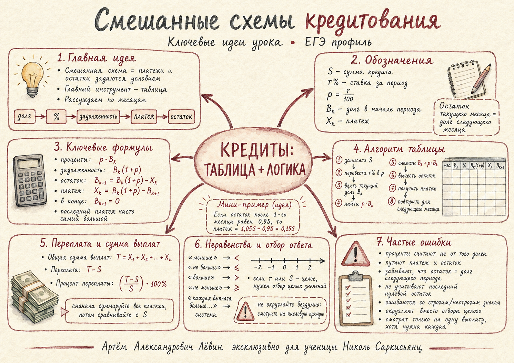

Таблица долга, начисление процентов, восстановление платежей, переплата, строгие условия и точный отбор целых значений.
Николь СаркисьянцЛёвин Артём АлександровичЕГЭ по профильной математике7 августа 2026
Наглядная памятка к занятиюОткрыть акварельную карту
Короткое повторение таблицы, формул, переплаты и отбора ответа.

Идея решения
В смешанной схеме график погашения задаётся условиями задачи. Опорой служит движение долга по периодам.
Текущий долг Каждый период начинается с остатка после предыдущего платежа.
Проценты Начисляются на текущий долг, затем формируется задолженность перед платежом.
Платёж Получаем как разность задолженности после процентов и нового остатка.
Финиш После последнего платежа остаток равен нулю.
Главная связь: остаток после текущего платежа становится долгом в начале следующего периода.
долг→проценты→задолженность→платёж→остаток
Обозначения
S первоначальная сумма кредита
r% ставка за один период
p ставка в долях единицы
Bk долг в начале периода k
Xk платёж в периоде k
T общая сумма выплат
Ключевые формулы Сначала определите текущий долг Bₖ. Все остальные величины одной строки строятся от него.
Начисленные проценты:
Задолженность перед платежом:
Остаток после платежа:
Отсюда платёж:
После последнего платежа:
Последний платёж может заметно отличаться от предыдущих: его задача — полностью закрыть оставшийся долг вместе с начисленными за последний период процентами.
Переплата
Контроль вычислений: абсолютная переплата совпадает с суммой фактически начисленных процентов за все периоды.
Универсальный алгоритм: 9 шагов Пройдите строку слева направо. Следующая строка начинается с остатка предыдущей.
Запишите первоначальный долг S.
Переведите ставку.
Используйте p = r/100.
Запишите известные остатки B₂, B₃, …
Найдите проценты pBₖ.
Получите задолженность Bₖ(1+p).
Восстановите платёж Xₖ.
Вычтите из задолженности известный остаток следующего периода.
В последней строке положите Bₙ₊₁ = 0.
Составьте уравнение, систему или неравенство из вопроса задачи.
Выполните отбор ответа.
Проверьте целочисленность параметров, строгие границы и исходные ограничения.
В русской записи это 1,225S и 22,5%. В MathML десятичная точка используется только как техническое представление числа внутри формулы.
Неизвестная процентная ставка
Пусть кредит равен 1 млн руб., а остатки после платежей: 0,6; 0,4; 0,3; 0,2; 0,1; 0.
При платежи имеют вид:
Если , то:
При целом r наибольшее допустимое значение равно 7%.
Слова условия → знак
Формулировка
Запись
A меньше B
A не больше B
A больше B
A не меньше B
Важно: строгая и нестрогая границы могут дать разные целые ответы.
Условие «каждая выплата»
Если платежи равны 0,55S; 0,475S; 0,5S и каждый из них должен превышать 5 млн руб., требуется одновременное выполнение трёх условий.
Если S — целое число миллионов рублей, минимально S = 11.
Точный отбор целого Смешанная дробь показывает положение границы между соседними целыми числами без потери точности.
Дробь удобнее сохранять точно:
Для границы вида 5/0,475 сначала устраните десятичную дробь: 5000/475 = 200/19.
Платежи заданы через x
Если платежи относятся как , то общая сумма выплат:
Если первоначальная сумма и ставка известны, значение x удобно находить из условия полного погашения.
В последней строке задолженность перед последним платежом совпадает с последним платежом, поскольку новый остаток равен нулю.
Свёрнутая формула
Рекуррентную модель можно развернуть на несколько периодов.
При полном погашении:
Формула особенно полезна, когда несколько платежей выражены через одну неизвестную величину.
Мини-пример с платежами x, 2x, 4x
Для кредита 245 млн руб. на три года под 20% годовых:
Это тот же принцип полного погашения, записанный сразу для трёх периодов.
Типичные ошибки
Проценты от S каждый месяц Ставка применяется к текущему долгу Bₖ.
Платёж и остаток перепутаны Платёж = задолженность после процентов − новый остаток.
Потеря связи строк Bₖ₊₁ переносится в начало следующего периода.
r используют как множитель Сначала вычисляется p = r/100.
Последний ноль пропущен Полное погашение означает Bₙ₊₁ = 0.
Знак выбран по привычке Сверяйте «меньше», «не больше», «больше», «не меньше».
Граница округлена Для целого ответа полезнее точная дробь и отбор.
Проверена одна выплата Слово «каждая» требует системы условий.
Переплата взята за месяц Сначала найдите сумму всех платежей T.
Целочисленность забыта После решения неравенства выполните отбор допустимых S или r.
Чек-лист перед ответом
Отмечайте пункты по мере проверки.
10 задач для закрепления
Проценты начисляются перед очередным платежом. Денежные величины указаны в миллионах рублей, если в условии нет другого уточнения.
Средний уровень
1. Три платежа
Кредит 2 млн руб. выдан на три месяца под 4% в месяц. После первого платежа долг равен 1,6 млн руб., после второго — 1 млн руб., после третьего кредит полностью погашен. Найдите три платежа и их общую сумму.
2. Процент переплаты
Кредит 1 млн руб. выдан на три месяца под 5% в месяц. После первого платежа осталось 0,8 млн руб., после второго — 0,5 млн руб., после третьего долг равен нулю. Найдите процент переплаты.
3. Каждая выплата больше 4
Кредит S млн руб. выдан на три месяца под 10% в месяц. После первого платежа долг составляет 0,7S, после второго — 0,4S, после третьего кредит погашен. Каждый платёж больше 4 млн руб. S — целое число. Найдите наименьшее S.
Выше среднего
4. Строго меньше 1,18
Кредит 1 млн руб. выдан на пять месяцев. После платежей долг последовательно составляет 0,8; 0,6; 0,4; 0,2; 0. Месячная ставка равна r%, где r — положительное целое число. Найдите наибольшее r, при котором общая сумма выплат меньше 1,18 млн руб.
5. Не больше 1,18
Условия задачи 4 сохранены, общая сумма выплат должна быть не больше 1,18 млн руб. Найдите наибольшее целое r.
6. Четыре выплаты
Кредит S млн руб. выдан на четыре месяца под 10% в месяц. После платежей долг последовательно составляет 0,75S; 0,5S; 0,25S; 0. Каждая выплата больше 6 млн руб. S — целое число. Найдите наименьшее S.
7. Платежи x, 2x, 4x
Кредит 245 млн руб. выдан на три года под 20% годовых. В конце каждого года совершается платёж. Размеры платежей равны x, 2x, 4x. После третьего платежа кредит полностью погашен. Найдите x.
8. Наибольшее S
Кредит S млн руб. выдан на три месяца под 8% в месяц. После первого платежа долг равен 0,7S, после второго — 0,4S, после третьего кредит погашен. Общая сумма выплат меньше 40 млн руб. S — положительное целое число. Найдите наибольшее S.
9. Найдите ставку
Кредит 2 млн руб. выдан на три месяца под одинаковую ставку r% в месяц. После первого платежа остаётся 1,4 млн руб., после второго — 0,8 млн руб., после третьего кредит полностью погашен. Общая сумма платежей равна 2,3 млн руб. Найдите r.
Сложная
10. Два целых параметра
Кредит S млн руб. выдан на четыре месяца под r% в месяц. S и r — целые, 1 ≤ r ≤ 20. После платежей долг составляет 0,8S; 0,55S; 0,3S; 0. Каждая из четырёх выплат строго больше 8 млн руб., общая сумма выплат не превышает 34 млн руб. Найдите наибольшее r и соответствующее S.
Ответы
№
Ответ
1
0,48; 0,664; 1,04 млн руб.; сумма 2,184 млн руб.
2
11,5%
3
S = 11 млн руб.
4
r = 5%
5
r = 6%
6
S = 22 млн руб.
7
x = 54 млн руб.
8
S = 34 млн руб.
9
r = 50/7% = 7 1/7%
10
r = 18%, S = 23 млн руб.
Генератор похожей задачи Новая задача сразу передаёт свой график долга в интерактивную модель справа.
Одна задача за запуск. Данные подобраны так, чтобы остатки убывали и все платежи были положительными.